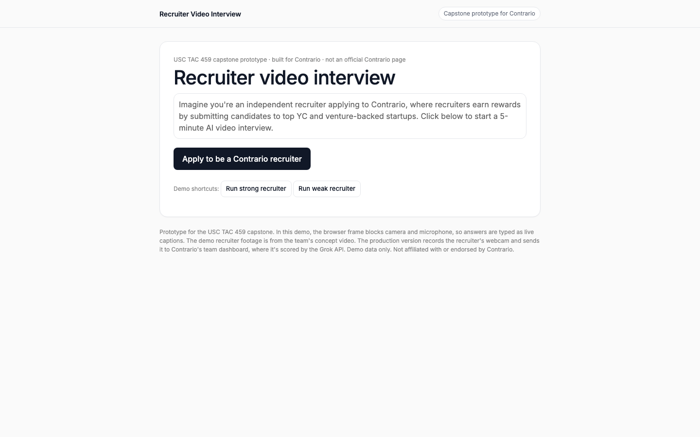
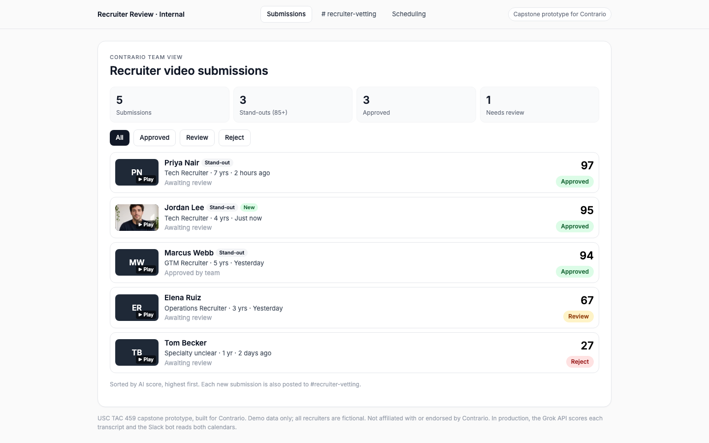
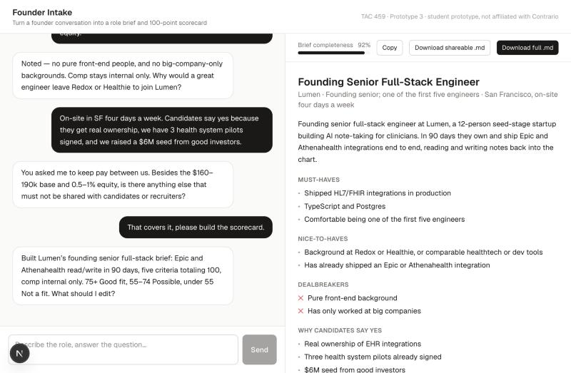
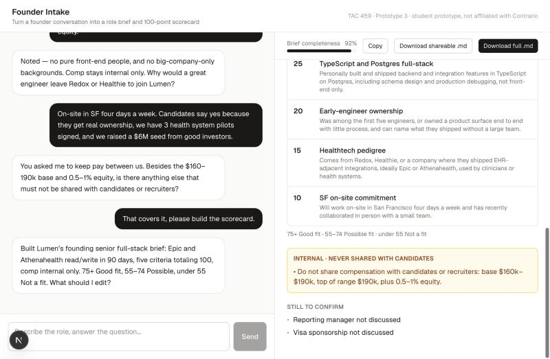

USC AI Minor · TAC 459 Applied NLP and Generative AI · Fall 2026
Contrario Capstone: Three Prototypes
Code and design screenshots for each prototype, built for Contrario (YC W25), a recruiting network that pairs expert human recruiters with AI.
Team: [add team member names] · Submission: December 2 · Draft
Summary
Three prototypes, one pipeline: a founder's brief is created, recruiters work from it, and the recruiters themselves are vetted.
#
Prototype
Who it helps
Key AI feature
Code
1
Role Brief Copilot Slack bot that answers recruiters' questions about a role from the founder's brief, finds and scores candidates, and escalates unknowns to the founder.
Recruiters, founders
Retrieval from the brief, grounded answers, candidate scoring
Recruiter Vetting Interviewer AI video interview for recruiters applying to the network. Scores them out of 100 and sorts them into Approved, Review or Reject; a human can overrule.
Founder Intake Chat that turns a founder's messy hiring notes into a role brief and a 100-point scorecard. Confidential details are kept out of the shareable export.
Founders, recruiters
Structured interviewing and generation (Grok function calling)
Python · Slack Bolt (Socket Mode) · Grok API · 26 unit tests · code
Daily DM of new roles that match each recruiter's profile.
Answers role questions in 1-3 sentences, only from the founder's brief, and names its source. Never guesses.
Strips INTERNAL brief sections before they reach the model, and blocks replies that repeat an internal number or phrase.
If the brief does not cover a question, it flags the founder, and the founder's reply is added to the knowledge base.
Finds candidates from public profiles and scores a recruiter's own candidate out of 100.
Screenshots needed (Slack, from the team's workspace or demo video)
1. The daily role-alert DM with Find candidates / Submit my own buttons · 2. A Q&A answer that cites the brief · 3. The "not in the brief" escalation to the founder · 4. A candidate score (Good fit / Possible fit / Not a fit)
Prototype 2: Recruiter Vetting Interviewer
HTML demo pages · Grok API scoring · Slack alerts · code
7-question interview with follow-ups when an answer is vague.
Scored out of 100: specialty fit 25, experience 25, verified placements 30, communication 20. 75+ Approved, 55-74 Review, under 55 Reject.
The AI sorts; humans decide. No recruiter is rejected without a team member signing off.

Applicant-facing start page (interview.html). Rendered from the repo.

Contrario team review dashboard (review.html), sorted by AI score. All recruiters are fictional demo data.
Prototype 3: Founder Intake
Next.js · TypeScript · Grok API with forced function calling · code
Founder describes a role in plain language; the AI asks one follow-up at a time and pushes back on vague answers.
A brief builds live beside the chat: must-haves, dealbreakers, compensation, why candidates say yes.
Confidential details go to an Internal section that is stripped from the shareable export. Facts the founder did not state are listed under "Still to confirm", not invented.
Ends with a 4-5 criterion scorecard totalling 100 points. The server rescales weights if the model's total is off.
Tested end to end with a scripted six-turn conversation: weights totalled 100 and the confidential $190k pay ceiling did not appear in any shareable field.

Chat on the left; the role brief fills in live on the right.

100-point scorecard, internal-only notes in amber, and open questions.
How the prototypes fit together
Founder Intake (3) produces the brief and scorecard → Role Brief Copilot (1) answers recruiters' questions from that brief → Recruiter Vetting (2) decides which recruiters get into the network, using the same 100-point scoring style.
Final product direction
Proposed: a website built around the recruiter scorecard, as the professor noted it fits the required website more naturally than the Slack copilot. Prototype 3's scorecard format and Prototype 2's rubric are the starting point. Final decision is pending feedback from Contrario's founders or other intended users.
Feedback plan
Founders: would they use a chat instead of writing a brief? Is five minutes the right length?
Recruiters: is the scorecard clearer than what they get today? What is missing?
Record what we heard and what we changed before committing to the final direction.
Known gaps
None of the prototypes has been tested with real founders or recruiters yet.
Prototype 3 replies take roughly 10 to 30 seconds, longest on the final scorecard turn.
Prototypes are not deployed; code and screenshots are provided as agreed.
Student prototypes for USC TAC 459. Not affiliated with or endorsed by Contrario.